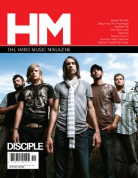

Disciple
 Spring 2001 Loud Times |
 November 2008 HM |
 November 2012 HM |
Media coverage:
- Sep 1996 in HM "A Lesson In Discipleship", by Ginny McCabe
- Spr 1997 in Garlic Press "Interview: Disciple"
- Nov 1997 in HM "Disciple", by Brian Vincent McGovern
- Jan 1999 in HM "Concert Review: Bride, Disciple", by Scott Herrin
- Jul 1999 in HM "Disciple", by Val Sutton
- Jul 1999 in 7ball "They're Like Sosa and McGuire", by David A. Jenison
- Jul 1999 in HM "Concert Review: Disciple", by Scott Herrin
- Sep 1999 in HM "Poster: Disciple"
- Jan 2000 in HM "Concert Review: Disciple", by David Bixler
- Sep 2000 in HM "Saving Metal", by Treble Bandoppler
- Spr 2001 in Loud Times "Servants of the Most High", by David A. Jenison
- May 2003 in HM "Disciple", by Jeffrey Ellinger
- May 2004 in 7ball "Live Music: Tulsa, Okla, The Edge", by Scott Herrold
- Jul 2005 in HM "The Theory of Evolution"
- Jul 2005 in CCM "Hardviews: Disciple (Kevin Young)", by John Cooper
- Nov 2006 in HM "We Are Finding Who We Are", by Doug Van Pelt
- Nov 2006 in HM "Poster: Disciple"
- Jan 2007 in CCM "The Purpose To Disciple's Melody", by Beau Black
- 2007 in Christian Rock Report "Disciple"
- 2007 in Christian Rock Report "National Band News: Disciple", by Daryl Ann Lowry
- Nov 2008 in HM "The Great Southern Trend Killers", by Dan MacIntosh
- Mar 2010 in HM "Hardnews: Quick & Concise: Micah Sannan: Weird Infection Spreads"
- Sep 2010 in HM "Disciple", by Bianca Montes
- Sep 2010 in Group "Ideas: Ministry and Media: Disciple", by Scott Firestone IV
- Sep 2010 in CCM Digital "The Fringe: Disciple", by Andy Argyrakis
- Feb 2012 in HM "Poster: Disciple (Kevin Young)"
- Nov 2012 in HM "In The Days of My Youth", by Fletch
- Nov 2012 in CCM Digital "The Fringe: Disciple", by Caroline Lusk
- Oct 2014 in HM "Third Time's A Charm", by Jordan Gonzales
- 1 Oct 2014 in CCM Digital "Forward March: Disciple Launches A Full-Scale Attack", by Andy Argyrakis
- 1 Oct 2014 in CCM Digital "A Little More: Q&A With Kevin Young", by Andy Argyrakis
Albums & reviews:
1997: My Daddy Can Whip Your Daddy
- Nov 1997 in YouthWorker, by George Palmer
- Nov 1997 in HM, by Doug Van Pelt
1999: This Might Sting A Little
- Jul 1999 in HM, by Chad Olson
- Jan 2000 in YouthWorker, by Dave Urbanski
- Spr 2001 in Loud Times
2001: By God
- Nov 2000 in HM, by Doug Van Pelt
- Jan 2001 in YouthWorker, by Dave Urbanski
- Spr 2001 in Loud Times
2005: Disciple
- May 2005 in HM, by Doug Van Pelt
- Jun 2005 in CCM, by Chris Well
- Jul 2005 in YouthWorker, by Dave Urbanski
- Nov 2005 in Worship Leader
- 2006 in Christian Rock Report
2006: Scars Remain
- Nov 2006 in HM, by Kern County Kid
- Dec 2006 in CCM, by Chris Well
- Jan 2007 in YouthWorker
- Jan 2007 in Relevant, by John Brandon
2008: Southern Hospitality
- Nov 2008 in HM, by Dan Frazier
- Jan 2009 in YouthWorker, by Andy Argyrakis
2010: Horseshoes & Handgrenades
- Sep 2010 in HM, by Matt Conner
- Sep 2010 in CCM Digital, by Grace C. Cartwright
2012: O, God Save Us All
- Nov 2012 in HM, by Jeff Cunningham
- Jan 2013 in Heaven's Metal, by Chris Gatto
- Jan 2013 in Worship Leader, by Jay Akins
- Jan 2013 in CCM Digital, by Matt Conner
2020: Love Letter Kill Shot
Award Summary (Nominations / Wins)
Dove Awards- 2000 Dove Awards
- Hard Music Album: This Might Sting A Little
- Hard Music Recorded Song: "I Just Know"
- Hard Music Album: By God
- Hard Music Recorded Song: "By God"
- Rock Album: Disciple
- Rock Recorded Song: "The Wait Is Over"
- Rock Album: Scars Remain
- Rock/Contemporary Recorded Song: "After The World"
- Rock Album: Southern Hospitality
- Rock Album: Horseshoes & Handgrenades
- Rock Recorded Song: "Dear X (You Don't Own Me)"
- Rock Recorded Song: "Invisible"
- Rock Album: Attack
- Rock/Contemporary Album: Love Letter Kill Shot
- Rock/Contemporary Recorded Song: "Promise To Live"
- 2024 Grammy Awards
- Best Contemporary Christian Music Performance/Song: "Firm Foundation (He Won't)"
Books about Disciple
- "Disciple" in The Encyclopedia of Contemporary Christian Music (Mark Allan Powell, 2002).
© 2011 CMnexus. Last updated May 2025. Contact: editor -AT- cmnexus -DØT- org